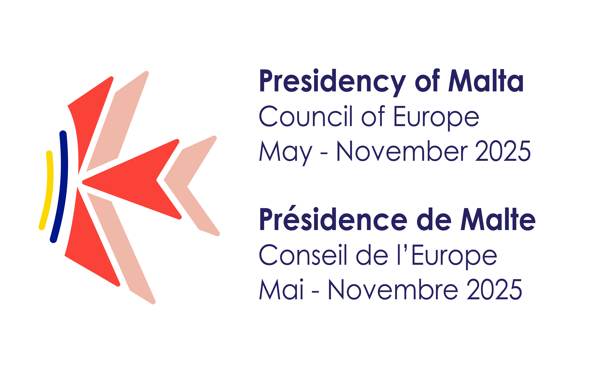

Council of Europe - Malta Campaign 2025
Student Project
In 2024, the European Council Representative of Malta announced to MCAST that Malta would hold the
Presidency of
the Council of Europe from May to November 2025. As part of this initiative, students at MCAST Mosta
were
invited to develop a brand identity, with the best visual concept being selected for official use.
Although the
project had a tight deadline of only two months, the experience proved to be incredibly rewarding.
While
I did
not win the final selection, my work was recognised and shortlisted among the top submissions.
The logo is a symbolic composition featuring a stylized Maltese cross, conveying a message relevant
to
today's
generation. Traditionally a symbol of protection, the cross is presented in a folded form,
representing
unity
and the shared direction of the Maltese people. A sandy yellow line signifies the island itself and
its
renowned
beaches, while additional elements introduce key national colours like red (from the Maltese flag)
and
blue that
represents the sea. Together, these elements reflect both the cultural identity and natural beauty
of
Malta.
